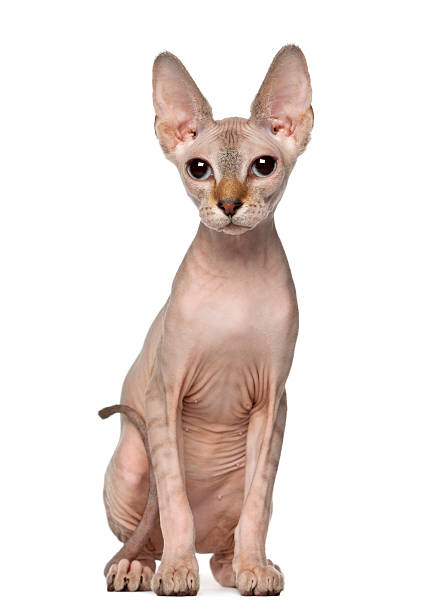

Descubra a Diversidade Felina!
Bem-vindo à nossa seção dedicada às fascinantes raças de gatos. Aqui, exploraremos uma variedade de raças populares, destacando as características únicas que tornam cada uma delas especial. Prepare-se para se encantar com a diversidade do mundo felino.
Persa
Os gatos Persas são conhecidos por sua pelagem longa e exuberante,
além de seus rostinhos achatados. São tranquilos e afetuosos, ideais
para ambientes domésticos. Características Únicas: Pelagem densa,
rosto achatado, personalidade tranquila.

Siamês
Os Siamês são elegantes e vocalmente expressivos. Com sua pelagem
curta e olhos azuis intensos, são gatos extremamente sociáveis e
carinhosos. Características Únicas: Corpo esguio, pelagem curta, olhos
azuis.

Maine Coon
Os gigantes gentis, os Maine Coons, são conhecidos por suas enormes
dimensões e pelagem luxuosa. São amigáveis, inteligentes e ótimos
companheiros. Características Únicas: Grande porte, pelagem longa,
orelhas pontiagudas.

Bengal
Os gatos Bengals têm pelagem com padrões de manchas semelhantes aos
leopardos. São ativos, curiosos e adoram brincar. Características
Únicas: Pelagem de padrão selvagem, corpo atlético.

Ragdoll
Ragdolls são conhecidos por sua personalidade relaxada e pelos longos
e sedosos. Ficam relaxados quando pegos, daí o nome "boneca de pano".
Características Únicas: Pelagem longa e sedosa, personalidade
relaxada.

Sphynx
Os gatos Sphynx são conhecidos por sua aparência sem pelos. Apesar da falta de pelagem, são carinhosos e adoram aconchego. Características Únicas: Ausência de pelos, orelhas grandes, personalidade afetuosa. 
Explore cada raça para encontrar aquela que mais combina com seu estilo de vida e preferências. As imagens fornecerão uma visão visual dessas maravilhosas raças de gatos. Se você está considerando adotar um novo amigo peludo, conhecer as características de cada raça é o primeiro passo para uma parceria feliz e duradoura. Divirta-se explorando a riqueza das raças de gatos!